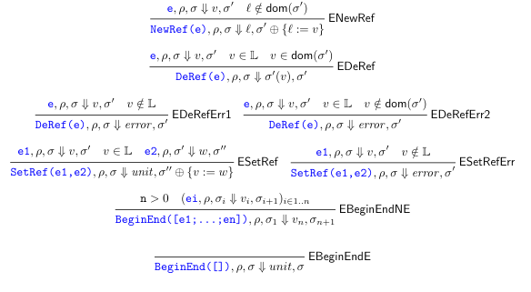

4.1 Mutable Data Structures
datain place means data is stored in some memory location, and is updated in the same location
functional update makes a fresh copy, and performs the update on the new copy.
References simulate the behavior of objects. Objects are an abstraction of a state. A state has a set of operations that can access and modify the state, and the ability to reer to the state and operations within it through special variables (this or self)
Math functions are relations where each element of a fomain is assigned a unique element in the codomain
The following ocaml function is impure/stateful. This is because each time it is called, even with the same parameter, it can have a different result.
let f = let state = ref 0
in fun ()->
begin
state:=!state+1;
!state
end
When it is called, the resutls are listed below, it not the same as pure mathematical functions, as described above. It is stateful because it also relies on a hidden/internal state, which is the value in the pointer state
# f ();;
- : int = 1
# f ();;
- : int = 2
# f ();;
- : int = 2
Below is a counter object(to count) with models self reference using recursion, dec is implemented usinging
let c =
let rec this(state) =
{ inc = (fun i-> state := !state+i);
dec = (fun ()-> (this state).inc (-1));
read = (fun ()-> !state) }
in let s = ref 0
in this s
Below is a stack object implemented in ocaml
type stack =
{ push : int-> unit;
pop : unit-> int;
top : unit-> int};;
let s = let state = ref []
in { push = (fun i-> state:= i::!state);
pop = (fun ()-> let temp = List.hd !state
in state := List.tl !state; temp);
top = (fun ()-> List.hd !state)}
# s.push 1;;
- : unit = ()
# s.push 2;;
- : unit = ()
# s.pop ();;
- : int = 2
# s.top ();;
- : int = 1
4.2 Explicit Refs
Concrete Syntax
⟨Expression⟩ ::= ⟨Number⟩
⟨Expression⟩ ::= ⟨Identifier⟩
⟨Expression⟩ ::= ⟨Expression⟩⟨BOp⟩⟨Expression⟩
⟨Expression⟩ ::= zero?(⟨Expression⟩)
⟨Expression⟩ ::= if⟨Expression⟩then⟨Expression⟩else⟨Expression⟩
⟨Expression⟩ ::= let⟨Identifier⟩=⟨Expression⟩in⟨Expression⟩
⟨Expression⟩ ::= (⟨Expression⟩)
⟨Expression⟩ ::= proc(⟨Identifier⟩){⟨Expression⟩}
⟨Expression⟩ ::= (⟨Expression⟩⟨Expression⟩)
⟨Expression⟩ ::= letrec⟨Identifier⟩(⟨Identifier⟩)=⟨Expression⟩in⟨Expression⟩
⟨Expression⟩ ::= newref(⟨Expression⟩)
⟨Expression⟩ ::= deref(⟨Expression⟩)
⟨Expression⟩ ::= setref(⟨Expression⟩,⟨Expression⟩)
⟨Expression⟩ ::= begin ⟨Expression⟩∗(;) end
⟨BOp⟩ ::= +|-|*|/
The notation *(;) next to the nonterminal <Expression> in the production for begin/end means there can be from 0 to an infinite amount of expressions separated by ; Examples of the concrete syntax
newref(2)
let a=newref(2)
in a
let a=newref(2)
in deref(a)
let a=newref(2)
in setref(a,deref(a)+1)
let a=newref(2)
in begin
setref(a,deref(a)+1);
deref(a)
end
let g =
let counter = newref(0)
in proc (d) {
begin
setref(counter, deref(counter)+1);
deref(counter)
end
}
in (g 11)- (g 22)
Abstract Syntax
The abstract syntax is listed below, and is built off of REC. New syntax is bolded.
| Var of string
| Int of int
| Add of expr*expr
| Sub of expr*expr
| Mul of expr*expr
| Div of expr*expr
| Let of string*expr*expr
| IsZero of expr
| ITE of expr*expr*expr
| Proc of string*expr
| App of expr*expr
| Letrec of rdecs*expr
| NewRef of expr
| DeRef of expr
| SetRef of expr*expr
| BeginEnd of expr list
| Debug of expr
EREF evaluation rules attached below
Interpreter - Specification
Given a set of symbolic memory location L, write l, li for memory locations. A heap/store is a partial function from memory to expressed values. The set of stores is S
S:= L -> EV
The set of expressed values is
EV := Z U B U U U CL U L
U := {unit}
Evaluation judgements for EREFS (seen above), are of the form, e is an expression, p is an environment, o is the initial store, r is the result, and o` is the final store.
e,p,o⇓ r,o`
Evaluating an expression returns both a result and updated store, the evaluation rules are found above.
ESetRef and ESetRefErr show how assignment works.
An assignment like SetRef(e1, e2) is evaluated to cause an effect, usually to update the contents of the location obtained from evaluating e1 with the value obtained from evaluating e2. We don't expect to get any value back (like a void function in C/C++), but all functions must return a value. This is what the new unit serves the place of, it is effectively a placeholder value.
Implementing Stores
The implementation of the evaluator for EREFS needs stores implemented. They will be implemented as arrays in OCaml. The interface file below declares the types of the values in the public interface of the store. (parametric constructor type Store.t, the type of the store, and multiple functions)
open Ds
type 'a t = { mutable data: ’a array; mutable size: int} (*data is declared mutable so the store may be resized*)
val empty_store : int-> ’a-> ’a t =
fun i v-> { data=Array.make i v; size=0 } (*empty_store n v returns a store of size n where each element is initialized to v*)
val get_size : ’a t-> int =
fun st-> st.size (*get_size s returns the number of elements in the store*)
val new_ref : ’a t-> ’a-> int =
fun st v->
let new_array = Array.make (st.size*2) v
in Array.blit st.data 0 new_array 0 st.size;
st.data<-new_array (*new_ref s v stores v in a fresh location and returns the location*)
val deref: ’a t-> int-> ’a ea_result =
fun st l ->
if l>=st.size
then error "Index out of bounds"
else return (st.data.(l)) (*deref s l returns the contents of location l, prefixed by Some, in the store s. This operation fails, returning None, if the location is out of bounds*)
val set_ref : ’a t-> int-> ’a-> unit ea_result =
fun st l v->
if l>=st.size
then error "Index out of bounds"
else return (st.data.(l)<-v) (*set_ref s l v updates the contents of l in s with v. It fails, returning None, if the index is out of bounds.*)
let rec take n = function
| []-> []
| x::xs when n>0-> x::take (n-1) xs
| _-> []
val string_of_store : (’a-> string)-> ’a t-> string
let ss = List.mapi (fun i x-> string_of_int i^"->"^f x) @@ take st.size @@ Array.to_list st.data
in
String.concat ",\n" ss
(*string_of_store to_str s returns a string representation of s resulting from applying to_str
to each element.*)
let string_of_store f st =
match st.size with
| 0-> ">>Store:\nEmpty"
| _-> ">>Store:\n"^ string_of_store’ f st
Interpeter - Implementation
If we were to handle the stores in the background, including its other data types, it is a state monad and we would have a combination of error reader and state monads. Combining monads can be done through monad transformers
Though we aren't. We will be holding the store as a global variable g_store
g_store declares a store of size 20 where all valeus are initialized to NumVal 0
Locations are denoted by an integer wrapped in a RefVal constructor. Ex; RefVal 7 5 2 points to location 7 in memory.
type exp_val =
| NumVal of int
| BoolVal of bool
| ProcVal of string*expr*env
| UnitVal
| RefVal of int
Here are the extra variants to the interpreter
let rec eval_expr : expr-> exp_val ea_result =
fun e->
match e with
| NewRef(e)->
eval_expr e >>= fun ev->
return (RefVal (Store.new_ref g_store ev))
| DeRef(e)->
eval_expr e >>=
int_of_refVal >>= fun l->
Store.deref g_store l
| SetRef(e1,e2)->
eval_expr e1 >>=
int_of_refVal >>= fun l->
eval_expr e2 >>= fun ev->
Store.set_ref g_store l ev >>= fun _->
return UnitVal
| BeginEnd([])->
return UnitVal
| BeginEnd(es)->
eval_exprs es >>= fun evs->
return (List.hd (List.rev evs))
| Debug(_e)->
string_of_env >>= fun str_env->
let str_store = Store.string_of_store string_of_expval g_store
in (print_endline (str_env^"\n"^str_store);
error "Debug called")
| _-> failwith ("Not implemented: "^string_of_expr e)
and
eval_exprs =
fun es->
match es with
| []-> return []
| h::t->
eval_expr h >>= fun ev->
eval_exprs t >>= fun evs->
return (ev::evs)
Extended Example: Encoding Objects
Here is EREFS with records
let c = let s = newref(0)
in
{
inc = proc (d) { setref(s,deref(s)+d) };
read = proc (x) { deref(s) };
reset = proc (d) { setref(s,0) }
}
in begin
(c.inc 1);
(c.inc 2);
(c.read 0)
end
letrec self(s) =
{ inc = proc (d) { setref(s,deref(s)+d) };
read = proc (x) { deref(s) };
reset = proc (d) {
let current = ((self s).read 0)
in ((self (s)).inc (-current))}
}
in let new_counter = proc(init) {
let s = newref(init)
in (self s)
}
in let c= (new_counter 0)
in begin
(c.inc 1);
(c.inc 2);
(c.reset 0);
(c.read 0)
end